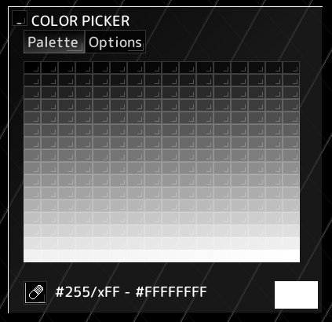

◆Color modes
The main editor can work with two color modes: RGBA and indexed.
When creating a new image througe the voidsprite Launchpad,
the color mode needs to be chosen manually.
When importing a file, the color mode is determined automatically based on the file's contents.
◆RGB mode
In this mode, each pixel is directly represented using red, green, blue and alpha values, allowing full 32-bit color.
 The color picker has different options for choosing colors:
The color picker has different options for choosing colors:
- Visual: choose the color using a hue slider and a 2D saturation/value area
- Sliders: choose the color using HSV and RGB sliders
- Other: choose the color using sliders for other color models (CMYK, YCbCr, HSL)
The input field below the color picker can be used to directly enter the color value in hex format (#RRGGBB), or the name of a color from an installed palette.
Additionally, the Palettes tab can be used to choose colors from installed palettes.
Some features, such as filters and layer opacity are only available in this mode.
◆Indexed mode
In this mode, each pixel is represented by an index that refers to a color in a palette.
It's intended for working with formats that enforce a limited color palette.

The color picker only allows choosing colors from the current palette. To edit a color, right-click it.
(does not apply when exporting to .voidsn)
Filters and layer opacity are not available in this mode.
◆Converting from RGB to indexed
To convert a workspace from RGB to indexed mode, choose > on the navigation bar.
Your current workspace will remain open in RGB mode, and a copied workspace will open in indexed mode.
To reduce the number of colors, use > .
◆Converting from indexed to RGB
To convert a workspace from indexed to RGB mode, choose > on the navigation bar.
Your current workspace will remain open in indexed mode, and a copied workspace will open in RGB mode.